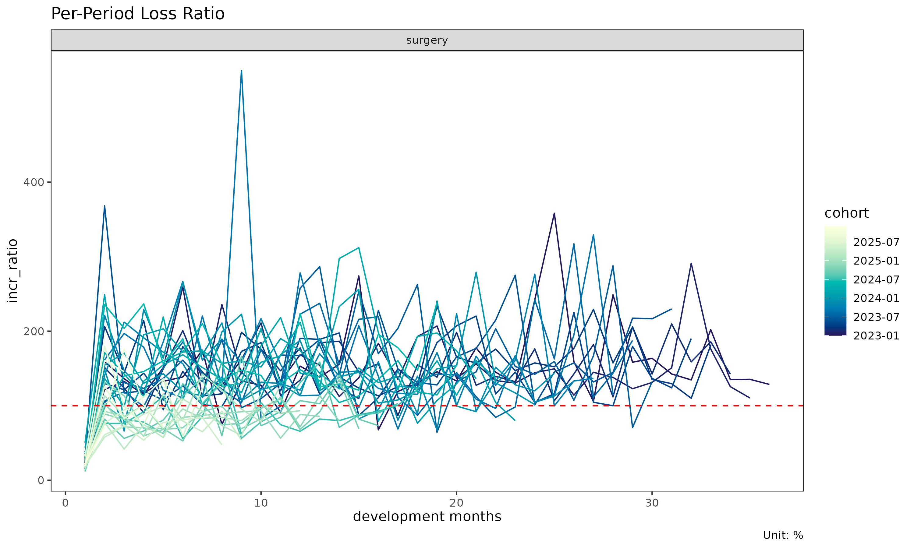
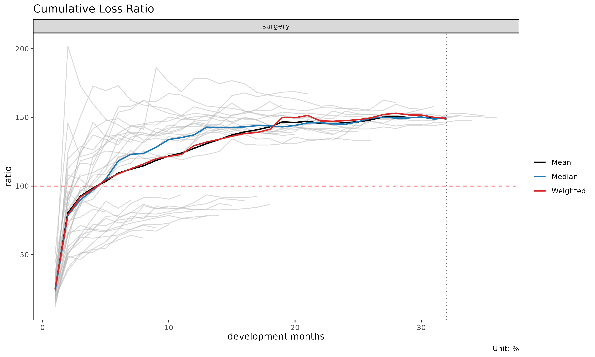
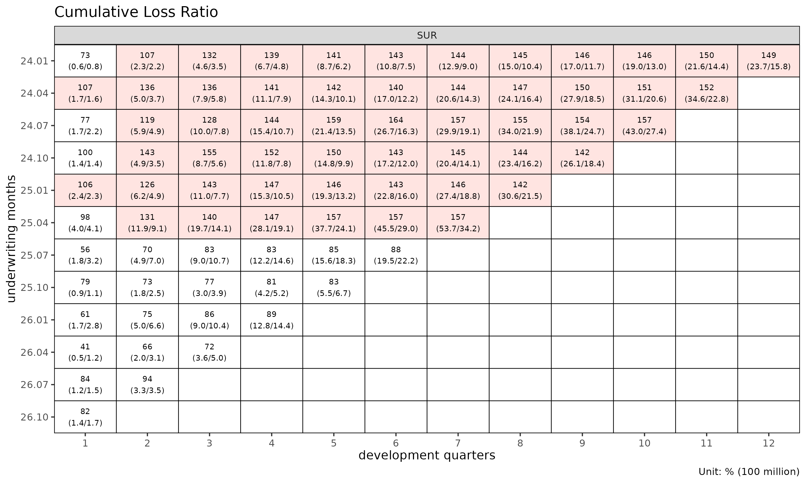
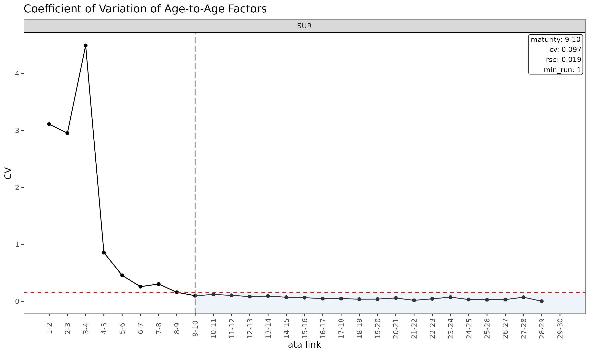
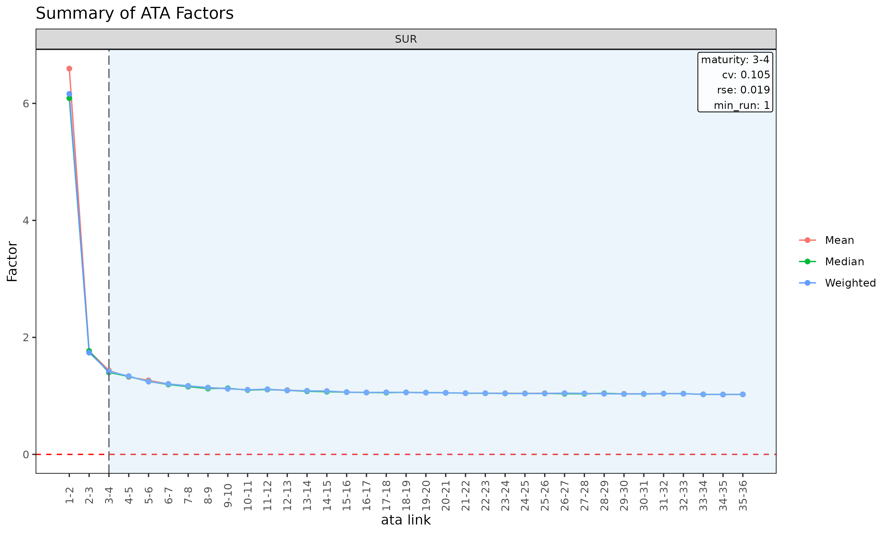
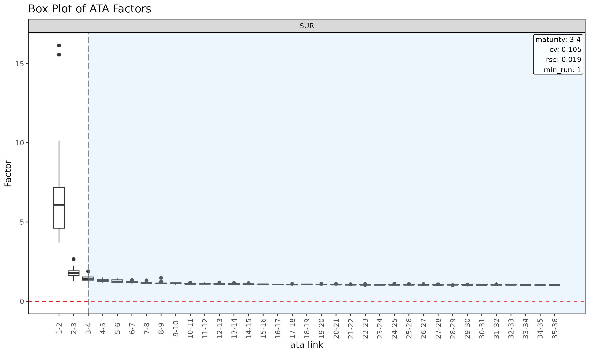
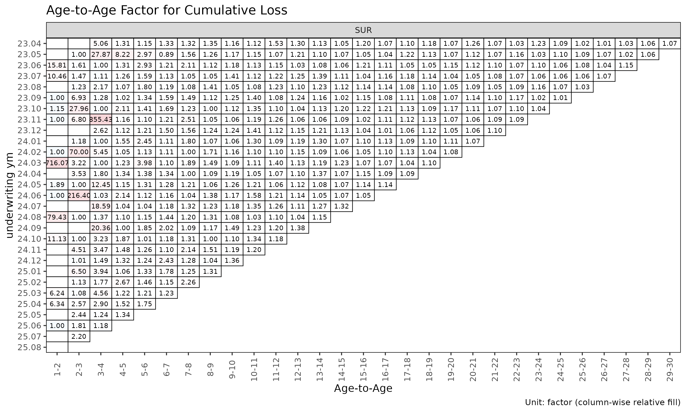
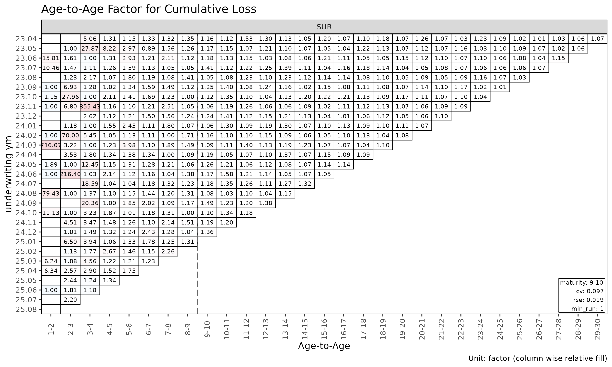
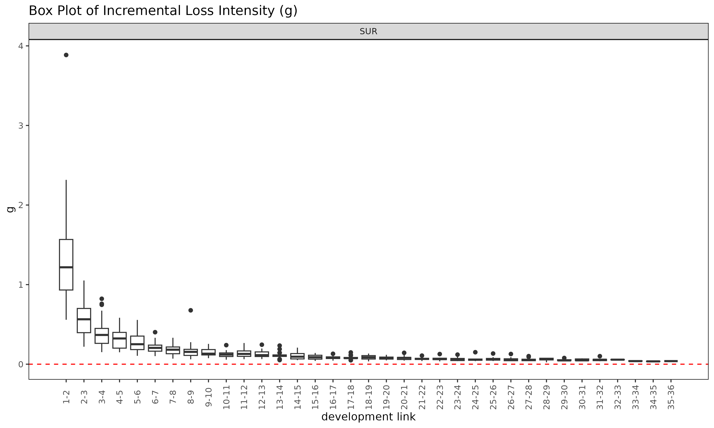

Triangle, Link and Maturity: 데이터 구조와 factor 진단
Source:vignettes/articles/triangle-link-and-maturity-ko.Rmd
triangle-link-and-maturity-ko.Rmd영어 원본 보기: Triangle, Link and Maturity: data structures and factor diagnostics
chain ladder 또는 손해율 모형을 적합하기 전에 기반이 되는 triangle 과
그로부터 파생된 단계 연결 테이블(link table) 을 살펴보는 것이
효율적이다. 이 문서는 Triangle 과 Link 데이터
구조, 진단 플롯, 그리고 ATA 인자가 chain ladder 추정에 신뢰할 만큼
안정화되는 dev 시점을 식별하는 detect_maturity() 까지
다룬다.
1. Triangle 진단
이 문서는 간결성을 위해 surgery 그룹만 사용한다 — 모든
절차는 다중 그룹 입력에도 그대로 일반화된다.
library(lossratio)
data(experience)
exp <- experience[coverage == "surgery"]
tri <- as_triangle(
exp,
groups = "coverage",
cohort = "uy_m",
calendar = "cy_m",
loss = "incr_loss",
exposure = "incr_exposure"
)코호트 궤적
plot(tri) # 코호트별 누적 손해율 궤적
plot(tri, metric = "incr_ratio") # 누적 대신 증분 손해율
plot(tri, summary = TRUE) # 코호트 선 + overlay (평균 / 중앙값 / 가중)
summary = TRUE overlay 는 각 dev 에서 평균, 중앙값, 가중
ratio 을 계산해 코호트 선 위에 겹쳐 그린다. 중심 경향에서 벗어나는
코호트를 포착하는 데 유용하다.
셀 히트맵
plot_triangle(tri, metric = "ratio") # 누적 ratio
plot_triangle(tri, metric = "incr_ratio") # 증분 ratio
# detail 라벨은 두 줄이라 monthly 셀에서는 겹침 — quarterly 로 다시 빌드
tri_q <- as_triangle(exp, groups = "coverage", cohort = "uy_m", calendar = "cy_m", loss = "incr_loss", exposure = "incr_exposure", grain = "Q")
plot_triangle(tri_q, label_style = "detail") # 비율 + (loss / exposure)
dev 별 그룹 통계
sm <- summary(tri)
head(sm)
#> Key: <coverage, dev>
#> coverage dev n_cohorts ratio_mean ratio_median ratio_wt incr_ratio_mean
#> <char> <int> <int> <num> <num> <num> <num>
#> 1: surgery 1 36 0.2522898 0.2393582 0.2525932 0.2522898
#> 2: surgery 2 35 0.8030639 0.7859128 0.7890646 1.3572087
#> 3: surgery 3 34 0.9258662 0.8997912 0.9204360 1.1519240
#> 4: surgery 4 33 0.9856772 0.9716558 0.9778502 1.1797269
#> 5: surgery 5 32 1.0336648 1.0502252 1.0447602 1.2268717
#> 6: surgery 6 31 1.0945723 1.1832332 1.0892484 1.3676102
#> incr_ratio_median incr_ratio_wt
#> <num> <num>
#> 1: 0.2393582 0.2525932
#> 2: 1.2618216 1.3280769
#> 3: 1.1517980 1.1728982
#> 4: 1.1167740 1.1742272
#> 5: 1.2663383 1.3110155
#> 6: 1.2676379 1.2752751(group, dev) 셀별 평균 / 중앙값 / 가중 손해율을 담은
TriangleSummary 객체를 반환한다.
2. Link / factor 진단
Link 객체는 triangle 으로부터 빌드된 단계 연결
테이블(link table) 이다. 단일 변수 모드에서는 관측된 ATA
인자(age-to-age factor) 를 담고, exposure 를
지정하면 ED 강도
를 담는다.
ata <- as_link(tri, loss = "loss")
sm <- summary(ata, model = "ata", alpha = 1)
head(sm)
#> Key: <coverage>
#> coverage ata_from ata_to ata_link mean median wt cv f f_se rse
#> <char> <num> <num> <fctr> <num> <num> <num> <num> <num> <num> <num>
#> 1: surgery 1 2 1-2 6.595 6.089 6.163 0.427 6.163 0.382 0.062
#> 2: surgery 2 3 2-3 1.765 1.768 1.739 0.157 1.739 0.042 0.024
#> 3: surgery 3 4 3-4 1.435 1.400 1.418 0.105 1.418 0.027 0.019
#> 4: surgery 4 5 4-5 1.324 1.331 1.339 0.068 1.339 0.018 0.014
#> 5: surgery 5 6 5-6 1.267 1.246 1.243 0.070 1.243 0.016 0.013
#> 6: surgery 6 7 6-7 1.204 1.194 1.205 0.048 1.205 0.011 0.009
#> sigma n_cohorts n_valid n_inf n_nan valid_ratio
#> <num> <num> <num> <num> <num> <num>
#> 1: 6207.618 35 35 0 0 1
#> 2: 1689.250 34 34 0 0 1
#> 3: 1372.883 33 33 0 0 1
#> 4: 1105.053 32 32 0 0 1
#> 5: 1086.826 31 31 0 0 1
#> 6: 812.770 30 30 0 0 1Link 객체 (단일 변수 모드) 의 summary()
메소드는 성숙점 탐지를 구동하는 링크별 통계를 계산한다.
-
mean,median,wt— 각 링크에서 관측된 ATA 인자의 기술 평균 (해당 링크가 관측되지 않은 코호트는 제외). -
cv— 관측 인자의 변동계수 (상대 산포, alpha 와 무관). -
f— WLS 로 추정된 인자 (loss_from^alpha로 볼륨 가중). -
f_se,rse— WLS 표준오차 및 상대 표준오차. -
sigma— 링크별 Mack 잔차 sigma. -
n_cohorts,n_valid,n_inf,n_nan,valid_ratio— 관측 수와 링크별 유한 ATA 인자의 비율.
Link 진단 플롯
plot(ata, type = "cv") # ata 링크별 CV (성숙점 overlay 포함)
plot(ata, type = "rse") # ata 링크별 RSE
plot(ata, type = "summary") # 링크별 mean / median / wt overlay
plot(ata, type = "box") # 링크별 관측 ata 의 boxplot
plot(ata, type = "point") # 링크별 관측 ata 의 산점도
ATA 인자의 Triangle
plot_triangle(ata, label_size = 2.5) # 관측 인자 히트맵
plot_triangle(ata, label_size = 2.5, show_maturity = TRUE) # 성숙점 라인 overlay
# detail 라벨은 두 줄이라 monthly 셀에서는 겹침 — quarterly Link 로 다시 빌드
ata_q <- as_link(tri_q, loss = "loss")
plot_triangle(ata_q, label_style = "detail") # 인자 + (loss / exposure)
이 히트맵은 각 셀을 자기 링크 내에서
log(ata / median(ata)) 로 색칠하므로, 열 방향 색상은 해당
링크의 중앙값에서 벗어나는 코호트를 구분해 준다.
ED 진단
ed <- as_link(tri, loss = "loss", exposure = "exposure")
sm <- summary(ed, model = "ed", alpha = 1)
head(sm)
#> Key: <coverage>
#> coverage ata_from ata_to ata_link mean median wt cv g
#> <char> <num> <num> <fctr> <num> <num> <num> <num> <num>
#> 1: surgery 1 2 1-2 1.34661 1.21766 1.31614 0.47327 1.31614
#> 2: surgery 2 3 2-3 0.58109 0.56432 0.58674 0.37381 0.58674
#> 3: surgery 3 4 3-4 0.39105 0.36751 0.38178 0.43535 0.38178
#> 4: surgery 4 5 4-5 0.31110 0.32321 0.33127 0.35969 0.33127
#> 5: surgery 5 6 5-6 0.27543 0.25088 0.25518 0.43531 0.25518
#> 6: surgery 6 7 6-7 0.21364 0.20479 0.22393 0.31371 0.22393
#> g_se rse sigma n_cohorts n_valid n_inf n_nan valid_ratio
#> <num> <num> <num> <num> <num> <num> <num> <num>
#> 1: 0.09107 0.06919 2930.7438 35 35 0 0 1
#> 2: 0.03508 0.05979 1580.2621 34 34 0 0 1
#> 3: 0.02931 0.07677 1587.1869 33 33 0 0 1
#> 4: 0.02135 0.06444 1319.1106 32 32 0 0 1
#> 5: 0.02087 0.08178 1421.4780 31 31 0 0 1
#> 6: 0.01273 0.05686 937.7864 30 30 0 0 1
plot(ed, type = "summary")
plot(ed, type = "box")
plot_triangle(ed) # ED triangle (default size)
summary(link, model = "ed") 는 단일 변수
summary() 에 대응하는 ED 측 분석으로, 강도
에 대해 링크별 통계를 계산한다.
3. 성숙점 탐지
성숙점(maturity point) 은 ATA 인자(age-to-age
factor) 가 chain ladder 추정에 신뢰할 만큼 안정화되는 경과 기간
링크이다. fit_ratio(method = "sa") 가 ED 에서 CL 로 전환할
때 내부적으로 사용한다.
탐지
detect_maturity() 는 Triangle 을 직접
입력으로 받는다 — 내부에서 단일 변수 Link 와 그 WLS 요약을
자동으로 빌드한다.
mat <- detect_maturity(
tri,
loss = "loss",
max_cv = 0.15, # CV 가 이 값보다 작아야 함
max_rse = 0.05, # RSE 가 이 값보다 작아야 함
min_valid_ratio = 0.5, # 해당 링크에서 유한 코호트가 50% 이상
min_n_valid = 3L, # 유한 코호트가 최소 3개
min_run = 1L # 연속 성숙 링크 최소 1개
)
print(mat)
#> Key: <coverage>
#> coverage ata_from change ata_link mean median wt cv
#> <char> <num> <num> <char> <num> <num> <num> <num>
#> 1: surgery 3 4 3-4 1.434507 1.400098 1.417706 0.1053282
#> f f_se rse sigma n_cohorts n_valid n_inf n_nan
#> <num> <num> <num> <num> <num> <num> <num> <num>
#> 1: 1.417706 0.02651852 0.01870522 1372.883 33 33 0 0
#> valid_ratio
#> <num>
#> 1: 1그룹별로 모든 임계값을 만족하는 첫 경과 기간 링크 한 행이 출력되며,
해당 링크의 전체 통계가 같이 실린다. 임계값 인자들은 반환된
Maturity 객체의 attribute 로도 저장된다.
임계값의 의미
-
max_cv— 해당 링크에서 관측된 ATA 인자의 변동계수.alpha와 무관하게 상대 산포를 제한한다. -
max_rse— WLS 추정 인자f의 상대 표준오차. 잔차 산포가 아니라 파라미터 불확실성을 포착한다. -
min_valid_ratio— 해당 링크에서 유한 ATA 를 갖는 코호트의 최소 비율. 대부분이 0 / NA / Inf 인 링크를 막는다. -
min_n_valid— 해당 링크에서 유한 코호트의 최소 개수. 데이터가 얇은 꼬리 영역의 절대 하한. -
min_run— 연속 성숙 링크의 최소 개수.min_run = 1L(default) 이면 조건을 만족하는 첫 링크가 채택되고,2L이상으로 두면 지속적인 안정성을 요구한다.
포트폴리오의 변동성 프로파일에 맞춰 조정한다. 임계값을 빡빡하게 (예:
max_cv = 0.05) 잡으면 성숙점이 뒤로 밀리고, 느슨하게 잡으면
앞으로 당겨진다.
적합 함수에서의 사용
detect_maturity() 는 fit_ata() 와
fit_cl() 내부에서도 maturity 인자를 통해
호출된다. 사용자 임계값을 넘기려면 maturity_spec() 으로
감싸 전달하고, default 값으로 자동 탐지하려면 "auto" 를
쓴다 (fit_ratio(method = "sa") / fit_loss() 는
default 가 "auto").
fit_ata(tri, loss = "loss",
maturity = maturity_spec(max_cv = 0.08, min_run = 2L))
fit_cl(tri, loss = "loss",
maturity = maturity_spec(max_cv = 0.08))
fit_ratio(tri, method = "sa",
maturity = maturity_spec(max_cv = 0.08))maturity 인자는 네 가지 형태를 받는다: NULL
(탐지 안 함), 이미 산출된 Maturity 객체
(detect_maturity() 결과 또는 수동 override 용
maturity_at()), 문자열 "auto" (default
임계값으로 내부 탐지), 또는 triangle 한 개를 인자로 받아
Maturity 를 반환하는 함수 (보통
maturity_spec() 로 작성).
fit_ratio(method = "sa") 에서는 탐지된 성숙점이 ED (초기
dev) 에서 CL (이후 dev) 로 전환되는 dev 를 결정한다.
그룹별 출력
다중 그룹 triangle 의 경우 detect_maturity() 는 그룹별로
한 행씩 반환하며, 각 그룹은 동일한 임계값 하에서 독립적으로
탐지된다.
tri_all <- as_triangle(
experience,
groups = "coverage",
cohort = "uy_m",
calendar = "cy_m",
loss = "incr_loss",
exposure = "incr_exposure"
)
detect_maturity(tri_all, loss = "loss")
#> Key: <coverage>
#> coverage ata_from change ata_link mean median wt cv
#> <char> <num> <num> <char> <num> <num> <num> <num>
#> 1: cancer 8 9 8-9 1.079323 1.060341 1.065354 0.07131509
#> 2: ci 11 12 11-12 1.094403 1.070561 1.114066 0.07563394
#> 3: inpatient 6 7 6-7 1.244842 1.184287 1.205542 0.13563431
#> 4: surgery 3 4 3-4 1.434507 1.400098 1.417706 0.10532824
#> f f_se rse sigma n_cohorts n_valid n_inf n_nan
#> <num> <num> <num> <num> <num> <num> <num> <num>
#> 1: 1.065354 0.01384183 0.01299271 637.2413 28 28 0 0
#> 2: 1.114066 0.01954799 0.01754653 1459.6221 25 25 0 0
#> 3: 1.205542 0.02746026 0.02277835 220.8771 30 30 0 0
#> 4: 1.417706 0.02651852 0.01870522 1372.8834 33 33 0 0
#> valid_ratio
#> <num>
#> 1: 1
#> 2: 1
#> 3: 1
#> 4: 1링크 진단 플롯으로 보면 결과를 한눈에 읽기 쉽다 — cv 별 facet 으로
나뉘고, 수직선이 CV 가 max_cv 아래로 처음 떨어지는 성숙점을
표시한다.

4. 빌드 전 검증
경과 기간 시퀀스에 결손이 의심되면 as_triangle() 호출
전에 점검한다.
gaps <- validate_triangle(exp, groups = "coverage", cohort = "uy_m", dev = "dev_m")
head(gaps)
#> <TriangleValidation>
#> Cohort dev-sequence gaps : none경과 기간이 비연속인 코호트마다 한 행씩을 담은
TriangleValidation 객체를 반환한다. 결과가 비어 있다면
triangle 이 깨끗하다는 뜻이다.
결손이 있는 경우의 선택지는 다음과 같다.
- 데이터 원본을 수정한다 (권장).
- 문제가 있는 코호트를 제외한다.
-
as_triangle()에fill_gaps = TRUE를 넘겨 누락 셀을 0 으로 채운다 (단,n_cohorts가 실제 관측 개수보다 많아지므로 신중히 사용).
5. 최근 대각선 부분집합
오래된 코호트가 더 이상 대표성이 없을 때 (요율 변경, 인수 가이드라인 변경 등) 추정을 최근 대각선으로 제한한다.
fit_ata(tri, loss = "loss", alpha = 1, recent = 12) # 최근 12개 대각선
#> <ATAFit>
#> alpha : 1
#> sigma_method: locf
#> recent : 12
#> regime : none
#> use_maturity: FALSE
#> groups : coverage
#> n_groups : 1
#> ata links : 35
fit_cl(tri, loss = "loss", recent = 12)
#> <CLFit>
#> method : mack
#> loss : loss
#> weight : none
#> alpha : 1
#> sigma_method: locf
#> recent : 12
#> regime : none
#> use_maturity: FALSE
#> tail_factor : 1
#> groups : coverage
#> periods : 36
fit_ratio(tri, recent = 12)
#> <RatioFit>
#> method : ed
#> loss_alpha : 1
#> exposure_alpha : 1
#> se_method : fixed
#> conf_level : 0.95
#> ci_type : bootstrap (B = 999, seed = NULL)
#> sigma_method : locf
#> recent : 12
#> loss_regime : none
#> exposure_regime : none
#> maturity[surgery] : 4
#> groups : coverage
#> periods : 36recent = K 는 calendar 위치
(rank(cohort) + dev - 1) 가 그룹 내 최근 K
개에 속하는 행만 남긴다.
6. 워크플로 체크리스트
적합 전에 확인할 사항은 다음과 같다.
-
validate_triangle()— 스키마와 결손 점검. -
as_triangle()— 파생 컬럼이 포함된 표준 형태 구축. -
plot(tri)/plot_triangle(tri)— 시각적 점검. -
summary(tri)— 그룹 수준 중심 경향 확인. -
as_link()+plot(link, type = "cv")— 링크 안정성 확인. -
detect_maturity()— 그룹별로 합리적 성숙점이 잡히는지 확인. -
detect_regime()(선택) — 구조적 변화 진단.
이후 신뢰할 수 있는 입력 데이터로 fit_ratio() /
fit_cl() 을 적합한다.
7. 함께 보기
-
vignette("getting-started")— 전체 파이프라인 개요. -
vignette("regime")—detect_regime()심화. -
vignette("projection")— 추정 방법 선택.